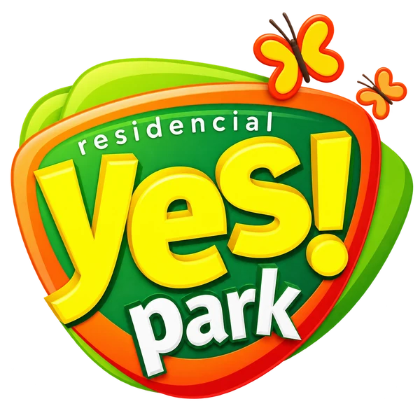

ConectaServiçosÁREA ADMINISTRATIVARecuperar acesso
Carregando…
Confira também a caixa de spam. O link tem validade limitada.
Não lembro meu e-mailPor segurança, não exibimos e-mails de administradores publicamente. Se você já estiver conectado, consulte Minha conta.
Se não conseguir entrar, consulte Supabase → Authentication → Users com o acesso autorizado ao projeto, ou solicite ajuda ao responsável pela administração.
Voltar à recuperação de senhaPara alterar o endereço de e-mail, solicite a atualização ao responsável autorizado no Supabase.